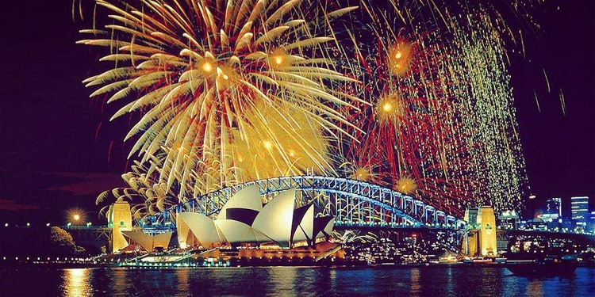

#新年烟火表演#
每年12月31日这一天都会在情人港(Darling Harbour)和海港大桥(Sydney Harbour Bridge)进行盛大的烟火迎新庆典活动，各个观景点一般都会人山人海，不少人甚至提前一天就在观景点的最佳位置搭起了帐篷来占据有利地形，想去可一定要上午就去排队占好有利地形。

图：新年烟火表演
#悉尼狂欢节(Sydney Festival) 1月#
悉尼狂欢节持续一个月，是悉尼主要的节庆活动，期间有一连串的音乐、戏剧、及其它艺术形式登台，还有各种户外运动，游客尽量不要错过任何一场免费音乐会。庆祝活动在1月26日澳大利亚国庆节这一天达到高潮，在澳洲国庆日这一天，全市洋溢着欢乐气氛，各地均有庆祝活动，码头有很多游戏可玩，在夜晚还有更盛大的烟火晚会。

图：悉尼狂欢节
#同性恋大游行Mardi Gras#
每年三月的第一个礼拜六，为大游行日——始 于1978年，和旧金山、阿姆斯特丹同性恋游行一起被誉为世界三大最有名的同性恋游行。在大游行期间，约有一万名参与者身着五颜六色的服装乘着华丽的花车 一起游行，沿着牛津街(Oxford Street)一路向前，穿过悉尼的达令赫斯特(Darlinghurst)，沿途游人众多，都会情不自禁地被这鲜艳色彩的羽毛、闪闪发光的饰物、有趣的模仿和嘲讽、深具骄傲与政治色彩的游行所吸引。除了这次大游行以外，节日项目还包括狂欢电影节、艺术表演、音乐、戏剧和由国际知名艺人带来的精彩演出。该节日已成为标志性的同性恋盛事，其目的在于增加对男性同性恋、女性同性恋、双性恋者和变性人社区及其文化的了解。
图：同性恋大游行
#动感活力悉尼灯光节 Vivid Sydney#
5月23日-6月09日——每年的动感活力悉尼灯光节，是灯光、音乐和灵感交织的节日，它将悉尼装扮成了充满华光、音乐和灵感的巨大画卷。悉尼歌剧院永远是灯光秀的亮点。 此外，灯光表演还在麦奎利大街(Macquarie Street)、岩石区(the Rocks)、马丁广场(Martin Place)、海德公园(Hyde Park)和达令港(Darling Harbour)上演。